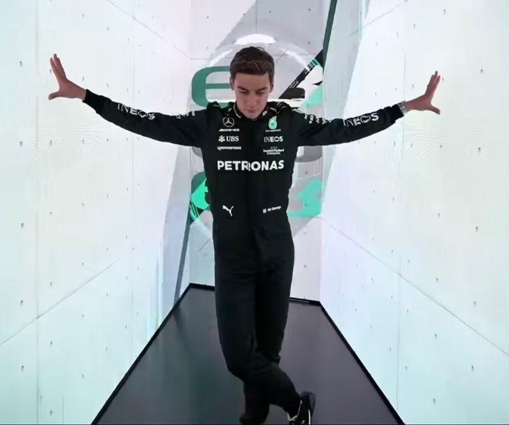
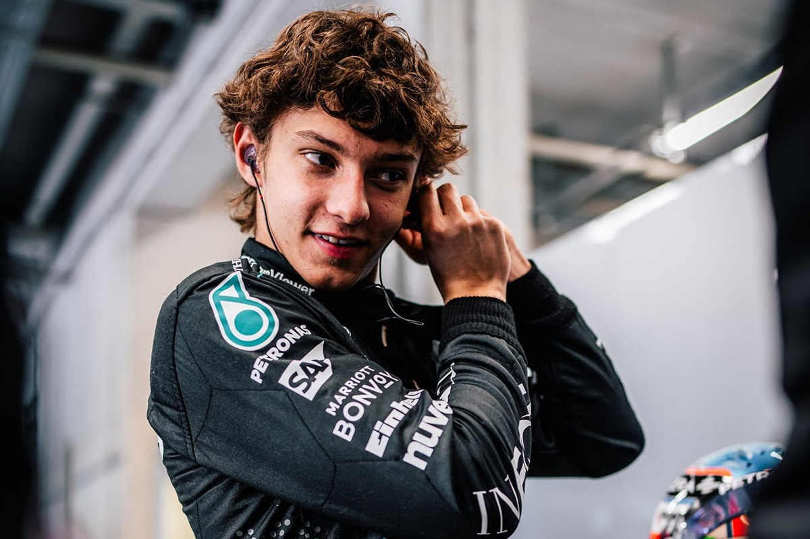

Mercedes

Mercedes-AMG Petronas
Team Principle & CEO: Toto Wolff
Drivers: George Russell, Kimi Antonelli
Car: F1 W16
Reserve Drivers: Valtteri Bottas, Frederik Vesti
Academy Drivers: Doriane Pin, Noah Stromsted
George Russell
George Russell has been at Mercedes since 2022 as a teamate to Lewis Hamilton. He was a young talent and he has delivered on that promise by becoming a multiple race winner.
Race Engineer: Marcus Dudley
Andrea Kimi Antonelli
Kimi is a rookie that had a lot of promise comming into the season and he has certainly delivered. In Miami he became the youngest pole sitter at 18 years old breaking Vettel's record by 2 years. He has been performing close to his teamate Russell meaning many people believe he will be world champion one day.
Race Engineer: Peter Bonnington